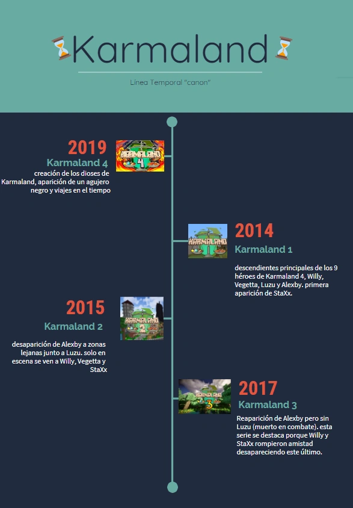

Cronología y Sucesos
Karmaland 4
En 2019 salió Karmaland 4 con 9 integrantes. aquí se cuenta cómo fueron los inicios del pueblo de Karmaland, cómo simplemente era un pequeño asentamiento donde se encontraba Merlon uno de los originales 7 héroes de Karmaland. además en el transcurso de la serie se puede observar cómo el pueblo iba evolucionando, agregando puesto de policía, una alcaldía, banco, diferentes mercados, etc. Sucesos interesantes en esta época fue la creación de la máquina del tiempo, la hermandad oscura, la creación de los dioses, un agujero negro y la hermandad normal.
Karmaland 1
En 2014 salió la secuela de lo anterior, Karmaland 1. aquí aparecen los descendientes de los anteriores 9 integrantes de Karmaland 4. comó Vegetta ll (hijo entre Vegetta777 y Rubius), Willy ll (hijo entre Fargan y Willyrex) Luzu y Alexby poseían longevidad por parte de Amana. Es la primera aparición de StaXx, un nuevo héroe que apareció de la nada en el pequeño pueblo de Karmaland. Vegetta ll aprende a utilizar magia.
Karmaland 2
En 2015 Continúa La Historia. Luzu y Alexby Cansados De Ayudar Solo En Karmaland Marcharon A Por Más Aventuras Lejos De Su Pueblo Natal. Mientras Tanto Vegetta ll, StaXx y Willy ll Continuaron Ayudando En El Pueblo Completando Misiones y Descubriendo Nuevos Crafteos.
Karmaland 3
En 2017 sale al fin Karmaland 3, últimos avances sobre Karmaland y su pueblo hasta dia de hoy. reaparición de Alexby pero sin Luzu, ya que murió en combate. En esta serie la amistad de Willy ll y StaXx se quiebra. acabando así la serie.
